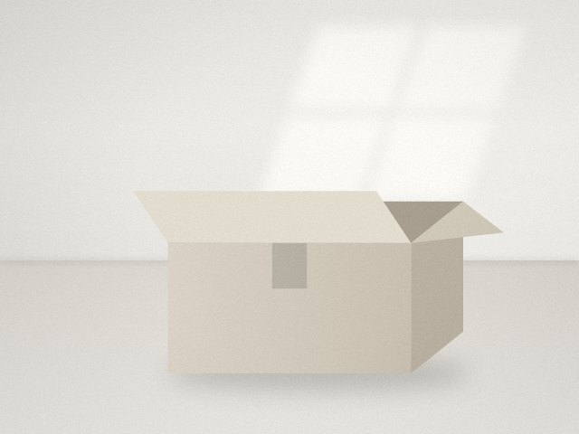

何から手放す？ 後悔しにくい順番で進める片付け
勢いで捨てて後悔するのは、たいてい「思い入れのあるもの」から手をつけたとき。判断しやすいものから順番に進めれば、迷いも後悔もぐっと減ります。

順番を決めるだけで、片付けは楽になる
片付けが進まない一番の理由は、判断に疲れてしまうことです。「これは要る？ 要らない？」という判断を何百回も繰り返すと、途中で手が止まります。
そこで大事なのが、判断しやすいものから先に手をつけることです。簡単な判断を重ねるうちに基準がはっきりし、難しいものにも向き合いやすくなります。
おすすめの順番
- 明らかなゴミ：期限切れの食品や薬、壊れたもの、空き箱や紙袋
- 消耗品のストック：使い切れないほどの洗剤、試供品、ホテルのアメニティ
- 紙類：読み終えたチラシ、期限の過ぎた保証書や説明書
- デジタル：使っていないアプリ、不要な写真、登録したままのメルマガ
- キッチン用品と日用品：同じ役割の道具が複数あるもの
- 服とバッグ：一年以上着ていないもの
- 本や趣味のもの
- 思い出の品：手紙、写真、子どもの作品など
後ろに行くほど、気持ちが絡んで判断が難しくなります。思い出の品は、他の場所が片付いて「基準」ができてから最後に向き合うのがおすすめです。
迷ったものは「保留箱」へ
どうしても決められないものは、無理に捨てる必要はありません。箱を一つ用意して、迷ったものはそこに入れ、日付を書いておきます。
三か月後に箱を開けて、その間に一度も取り出さなかったものは、手放しても困らない可能性が高いと判断できます。逆に、途中で取り出したものは、今の暮らしに必要なものです。
手放し方も選べる
捨てることに罪悪感があるなら、手放し方を変えてみるのも一つの方法です。
- まだ使えるものは、フリマアプリやリサイクルショップへ
- 本や服は、寄付を受け付けている団体へ
- 家族や友人に、欲しい人がいないか声をかける
誰かに使ってもらえると思えると、手放すハードルはぐっと下がります。ただし、売ることにこだわって部屋に出品待ちのものが積み上がるなら本末転倒です。期限を決めて、売れなければ処分すると決めておきましょう。